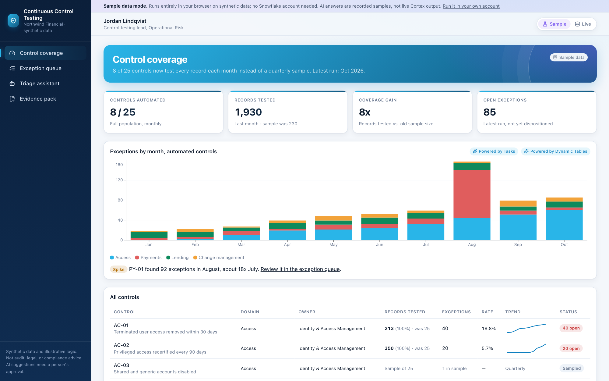
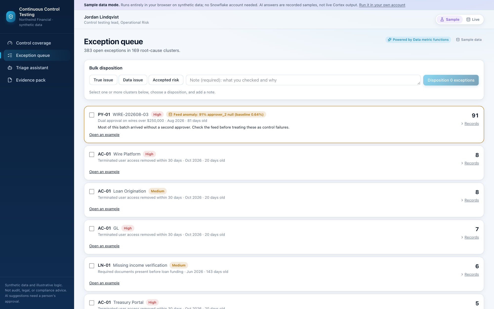
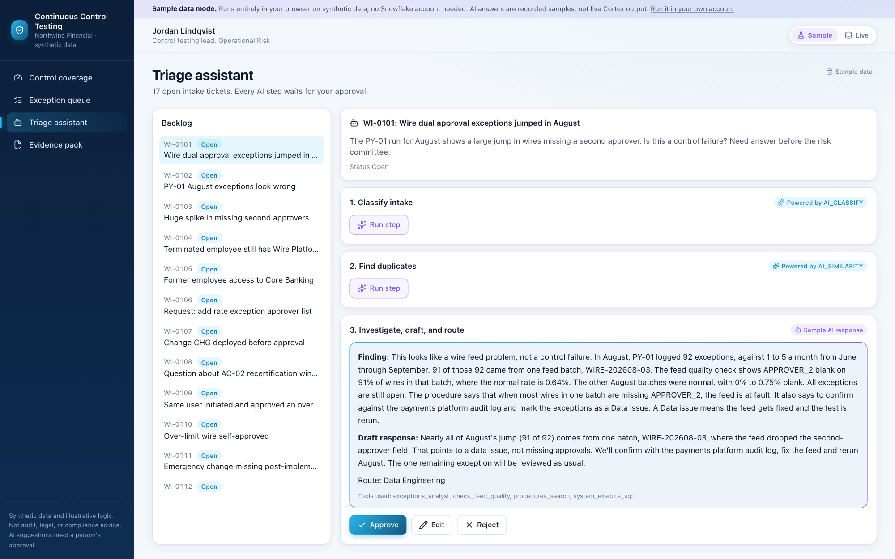

Test every record, not a sample, and keep up with the exceptions
Control testing often runs quarterly on 25 or 40 samples, so exceptions slip through. Test the full population and the counts can jump from zero to hundreds, faster than a team can review them. This example runs monthly tests over every record, groups the exceptions by root cause, uses data metric functions to tell a broken data feed from a failed control, triages the intake backlog with an AI agent that a person approves step by step, and keeps an evidence pack for every run.
Synthetic data, illustrative logic. Northwind Financial and every person in it are fictional. This is not audit, legal, or compliance advice, and it isn't a production system. AI suggestions need a person's approval.
Who it's for
Control testers and risk analysts
An exception queue grouped by root cause, with the evidence row, the control SQL, and an AI explanation for each exception.
Control owners
Exceptions and backlog tickets routed to the right first-line team, with a drafted response to review.
Audit and risk leadership
Coverage and trend across controls, and an evidence pack per run that an examiner can reproduce.
Walkthrough
Screenshots of the running app on its synthetic data set: eight automated controls tested monthly from January to October 2026.





How it works
Each capability below ran in live mode on a Snowflake Enterprise account in November 2026.
| Step | Snowflake capability | What it does here |
|---|---|---|
| Full-population tests | Stored procedure and a task | Runs each control's SQL over every record for a month and writes runs and exceptions. A monthly task (created suspended) calls it. |
| Rollup | Dynamic Tables | Latest run per control and month with exception rate and open count, refreshed after each disposition. |
| Data or control? | Data metric functions | A custom DMF measures the second-approver null rate per wire feed batch; a batch far above its baseline is flagged. |
| Explanations | AI_COMPLETE | Explains an exception from its evidence row, the control procedure, and the feed results, and suggests a disposition. |
| Intake | AI_CLASSIFY, AI_SIMILARITY | Labels each backlog ticket and scores it against the others to find likely duplicates. |
| Orchestration | Cortex Agents | Tools: Cortex Analyst on a semantic view of runs and exceptions, Cortex Search on control procedures, and stored procedures for feed quality and table metadata. |
| Evidence | Query history and Time Travel | Every run stores its query ID; source tables keep 30 days of Time Travel so counts can be reproduced as of the run. |
Get started
No account
Open the hosted example, or run it locally with Node.js 20.19 or later:
git clone https://github.com/sfc-gh-ooral/sfguide-continuous-control-testing.git
cd sfguide-continuous-control-testing
npm install
npm run devAI answers in this mode were recorded from a live run and are labeled Sample AI response.
Your Snowflake account
- Run
sql/setup.sqlin a Snowsight worksheet. It creates a dedicated database, an XSMALL warehouse, and a least-privilege role, loads the synthetic data from the repository, and backfills ten months of runs. - Register a key pair for your user and copy
.env.exampleto.env.local. - Run
npm run dev. Each screen shows the live role and measured latency. - When you're done, run
sql/cleanup.sql.
Requires Enterprise Edition or higher. The README lists every object created, the expected cost, and the full steps.
Customize with Cortex Code
- "Turn my existing control test SQL into rows in CONTROLS and schedule the monthly task, with a least-privilege role."
- "Connect the triage agent to my ticketing export and propose routing rules. Keep a human approval on every action."
- "Add a data metric function for each source feed and alert on freshness and null-rate changes."
Limits and disclaimer
- Results such as "92 exceptions" and "18x July" are planted stories on this synthetic data set.
- Ad-hoc data metric function calls don't accept a filtered subquery, so the runner snapshots each feed batch into a temporary table and measures that.
- Agent and AI answers vary run to run. Every one is a suggestion; nothing is routed or dispositioned without a person.
- Latency depends on your account, region, model, and warehouse. The app shows measured times in live mode only.
This is an illustrative example provided as is. It is not an official Snowflake product, it isn't supported by Snowflake Support, and it contains no customer data. Apache 2.0 license.